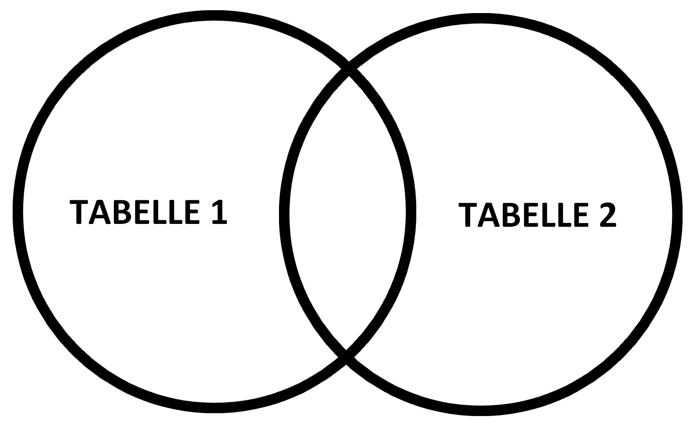
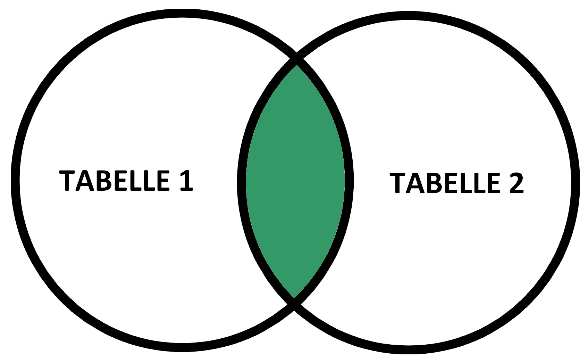
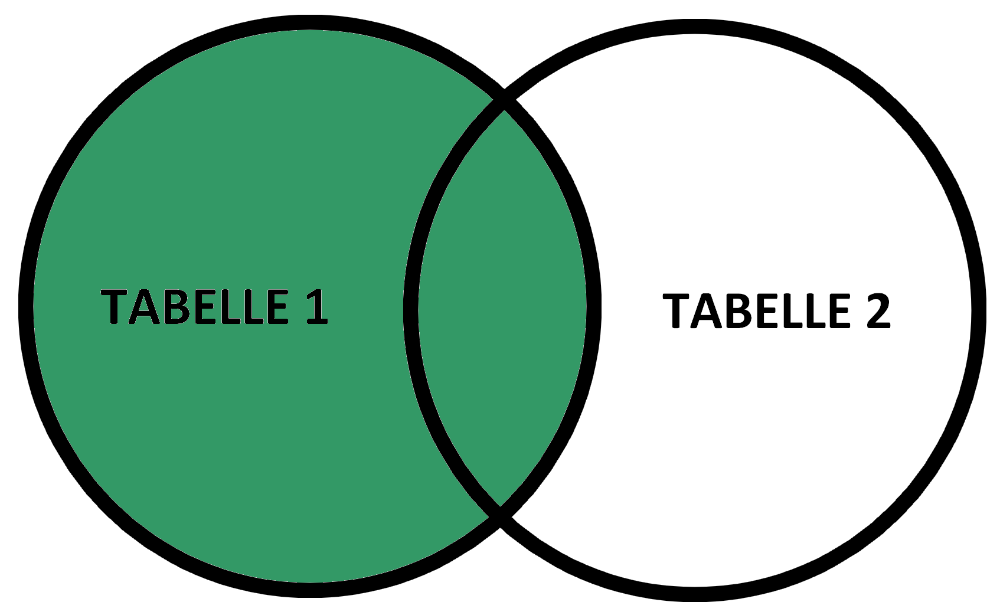
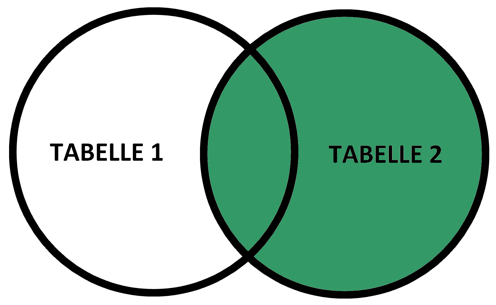
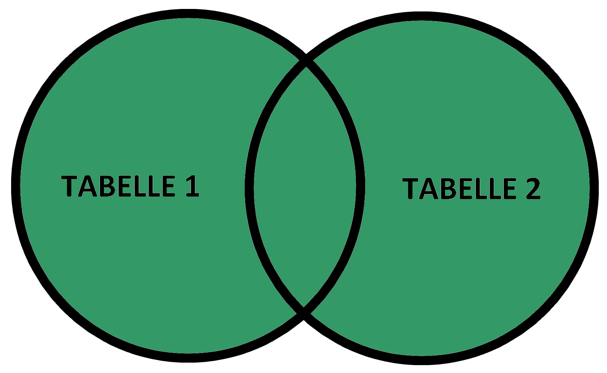

Mit Join kann man Datensätze aus mehreren Tabellen verknüpfen. Zum Beispiel alle Rechnungen von Person X anzeigen lassen. Dabei gibt es verschiedene Joins:
| Typ | Erklärung |  |
|---|---|---|
| INNER JOIN (equi-join) |
Alle Datensätze, die sich in Tabelle 1 UND Tabelle 2 befinden |  |
| LEFT JOIN | Alle Datensätze aus Tabelle 1, die sich mit Tabelle 2 überschneiden |  |
| RIGHT JOIN | Alle Datensätze aus Tabelle 2, die sich mit Tabelle 1 überschneiden |  |
| FULL OUTER JOIN | Alle Datensätze aus Tabelle 1 und 2, wenn es eine Überschneidung gibt |  |
{kind=link}
{kind=link}
{kind=link}
{kind=link}
{kind=link}
INNER JOIN
SELECT [TABELLE1].[SPALTE2], [TABELLE1].[SPALTE3]
FROM [TABELLE1]
INNER JOIN [TABELLE2]
ON [TABELLE1].[SPALTE1]=[TABELLE2].[SPALTE1];
LEFT JOIN
SELECT [TABELLE1].[SPALTE2], [TABELLE1].[SPALTE3]
FROM [TABELLE1]
LEFT JOIN [TABELLE2]
ON [TABELLE1].[SPALTE1]=[TABELLE2].[SPALTE1];
RIGHT JOIN
SELECT [TABELLE1].[SPALTE2], [TABELLE1].[SPALTE3]
FROM [TABELLE1]
RIGHT JOIN [TABELLE2]
ON [TABELLE1].[SPALTE1]=[TABELLE2].[SPALTE1];
FULL OUTER JOIN
SELECT [TABELLE1].[SPALTE2], [TABELLE1].[SPALTE3]
FROM [TABELLE1]
FULL OUTER JOIN [TABELLE2]
ON [TABELLE1].[SPALTE1]=[TABELLE2].[SPALTE1];